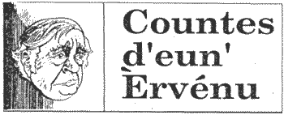

'Y'a tchique temps,' s'fit l'Ph'lip Desclios qui ragagnyi l'aut' jour me vaie, 'tu m'dis qu'achteu eune Ambassadeu ou Chef de Missioun né peut même pas dêhaller d'sa porte sans aver trais ou quatre guardiens à l'protégi. Mais ch'en 'tait pas d'même dans ton temps?'
'Pas du tout', j'li dis, 'd'jà qu'ieu deux d'mes amins, eun Ambassadeu' en Hollande et l'autre en Irlande qui fûtent assassinés dans lus vétuthes en s'n'allant de lus maisoun à l'office, et eun aut' Amabassadeu' dans tchique pays dans l'Amerique du Sud fût enl'vé par des terroristes et enfreumé pour deux ans dans eune cave sans lumièthe dévant qu'i fûsse èrlachi. I' r'veint en Angliéterre mais sa santé avait tellement souffert qu'i' mouothit bein vite après.
Quant a mé, quand j'tais à Singapour j'allais touas les dîmanches, si j'n'avais pas aut' chose officielle à faithe, me proum'ner deux ou trais heures dans la joungle. Le Preumi Ministre, Lee Kuan Yew, me dgèrnit dé n'pas faithe d'itét car i' n'avait pas assez d'police pour me sauvegarder countre autcheun terroriste ou malfaisant tchi pourrait m'attachi. Mais j'lis dis qué quand j'allais dans ches proumnades ch'én 'tait pas ès terroristes que j'pensais, mais ès serpents et les frélouns, tchi peuvent vos tuer, mais que j'n'avais jamais vei ni serpent ni fréloun.
'Ah hah', s'fit Lee Kuan Yew tout en riant, 'j'sais bein qu'autcheune chose né t'frait t'coundithe coumme i' faut, et ton gouvernement le savent étout, et i' n'éthount rein à r'dire countre mé si i't'arrivait tchique malheur ichein'.
Mais quand j'tais à Bangkok j'érchus eune message du Foreign Office qu'il' avaient raisoun d'penser que j'tais sus la liste éd certains terroristes. I' n'savaient pas pourtchi mais ch'tait p'têtre viyant que dans mon temps j'avais 'té Chef de Securité. I' m'dgèrnitent de prendre toute précautioun possiblye. Mais ch'tait achocre, ch't'avis-là! Tchi précaution que j'éthais peu prendre? J'avais ma p'tite bande de Gurkhas et il' éthaient sacrifié lus vie pour me d'fendre, mais i' n'portaient pas d'armes, rein qu'lus couté, et i' n'éthaient pas peu faithe grand chose countre des terroristes armés d'fusis, d'révolveurs et p'têt' de boumbes. Et d'même j'décidis d'rein n'faithe mais d'countinnuer coumme d'amors.
Mais mon chef d'office - Head of Chancery en angliais - 'tait d'autre idée. Eun couplye éd jours aprs qu'j'eus erchu mén averti d'Loundres j'allis à m'n office à huit heures du matin coumme d'habitude et j'm'aperchus qu'la porte de ma p'tire maisoun privée qu'ajounait m'n office 'tait ouerte. Criant qu'la nétisseuse 'tait acquo là-d'dans d'jà qu'd'amors oulle avait fini par siex heures et d'mie au pus tard, j'entris vaie. N'y'avait persounne là, mais au pid d'la f'nêtre y'avait eune grande douaille de corde avec eun cro sus ieun des buts. J'd'mandis à ma sécretaithe dé-diou ch'la ou m'dit que ch'tait le chef d'office qui l'avait mînse là. Je l'fis v'ner et j'lis d'mandis tchique v'là voulait dithe. I' m'érpounnit que si j'entendais les terroristes avanchi amount les d'grès pour m'assassiner j'd'vais aller dans la p'tite maisoun, barrer la porte à cliyé, houtchi la corde à la f'nêtre et drisser ava dans l'gardîn pour m'êcapper.
'Mais,' j'lis dis, pouarre achocre, si les terroristes veinnent i' n's'rount pas tous à mounter les d'grès!, y'en éthait d'autres dans l'gardîn, et si j'm'en vais être fusillé j'espèthe que ch'ra dans tchique aut' partie d'mon corps, pas dans mon driéthe!
Le Ph'lip s'êbouffit d'rire. 'J't'èrvais,' i' s'fit, 'avec deux ou trais balles de fusi dans l'driéthe! Eune photo de ch'na vaudrait des sou'.
'Mon Ph'lip,' j'lis dis, 'malheutheusement ch'la tu n'verras jamais, car j'tâche tréjous de dithe la vérité et de n'pas embelli les histouaithes que j'racounte'.
'Bonsens', interrompit l'Ph'lip, 'en v'là eune bouanne! Té, à n'pas embelli tes histouaithes?, quand nou sait tous bein que la maintchi du temps tu l's inventes!'
'Eh bein', j'lis dis en riant, 'y'érrat tréjous dans chu mounde des incrédules coumme té. Mais chutte fais j't'ai dit la verité. Et ch'est pour ch'là qu'i' faut que j'té dise étout que d'là qu'l'Foreign Office me dgèrnit que les terroristes 'taient souotre mé, je n'fus jamais attachi. Ch'est damage, vraiment, cat v'là tchi nos fait du bein d'aver eune miot d'fonne dans chutte vie'.
Lé Viér Trintais
JEP 12/11/1993
Viyiz étout: